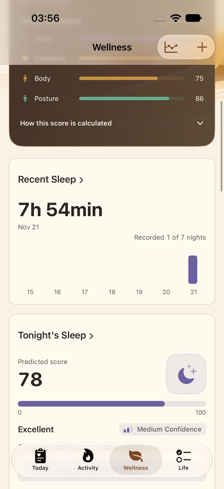
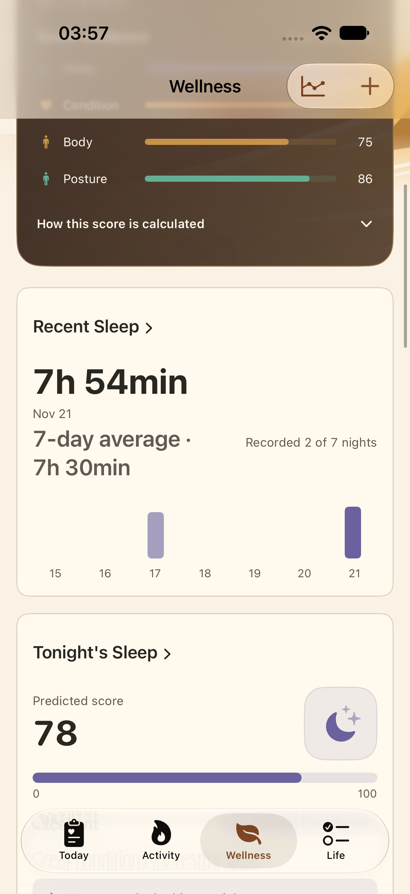
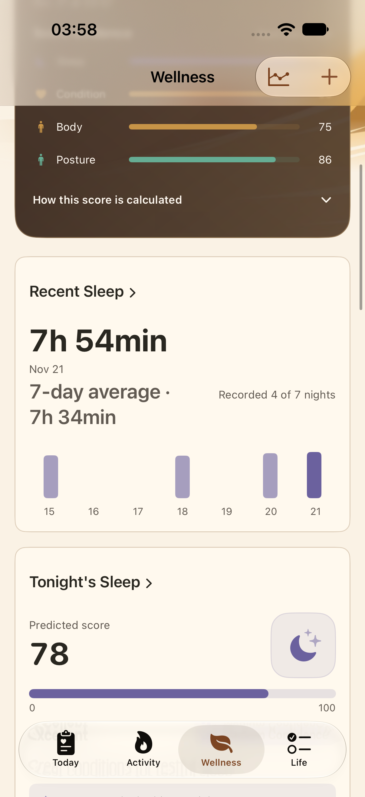
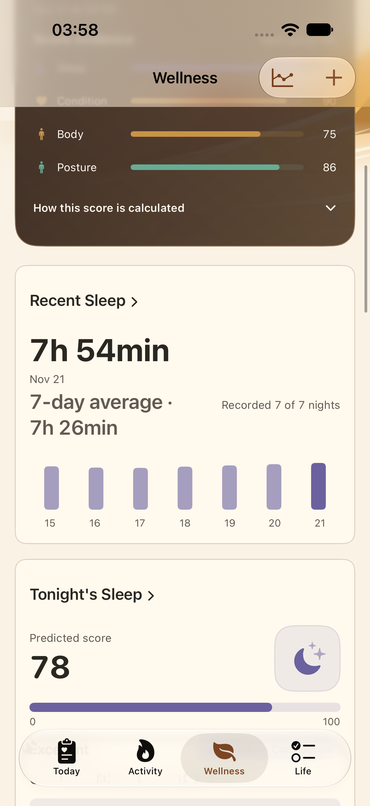
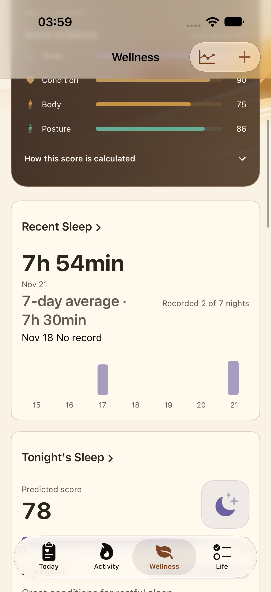
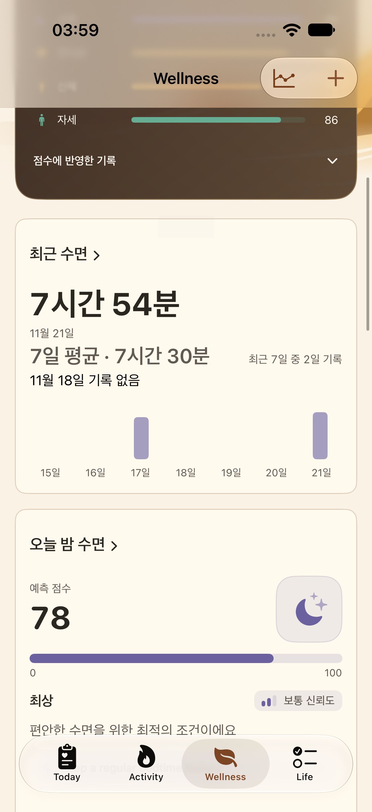
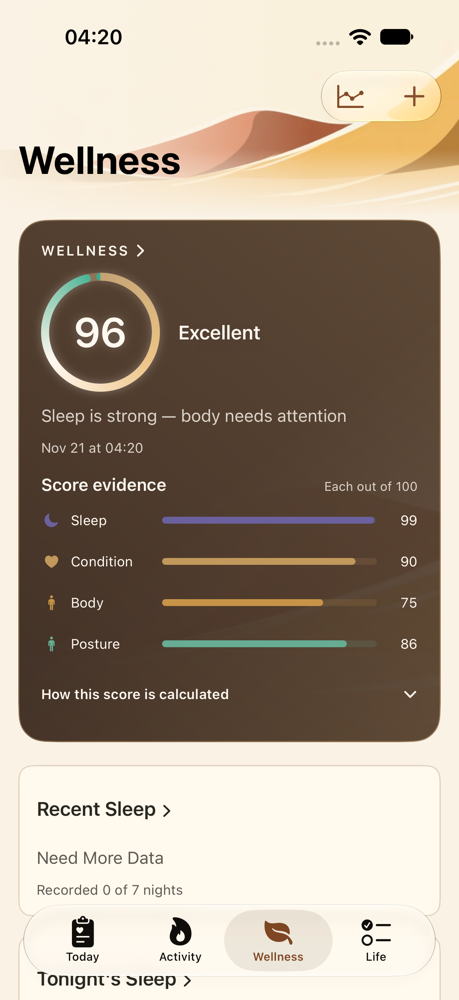
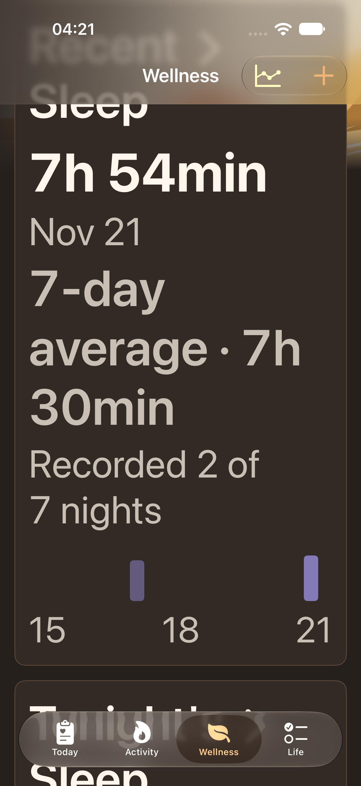
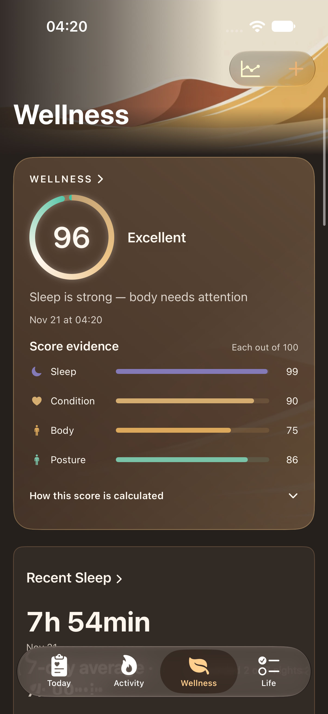
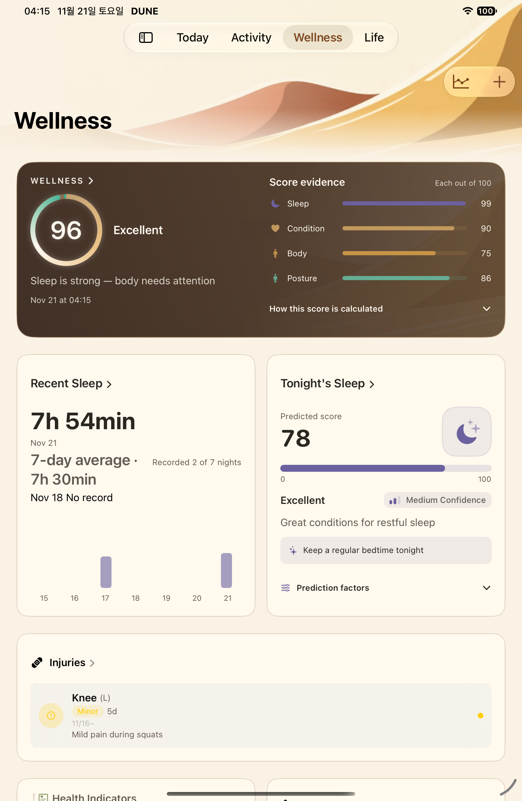
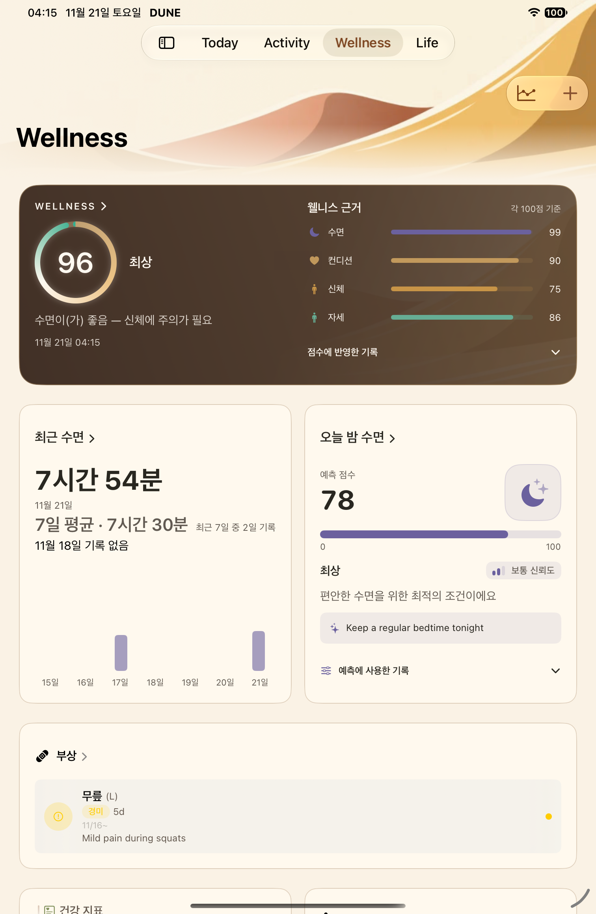
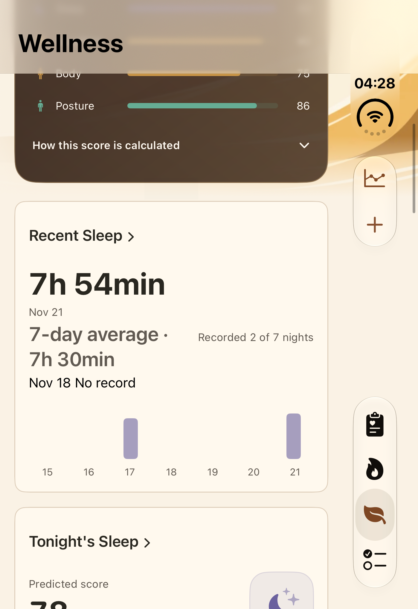
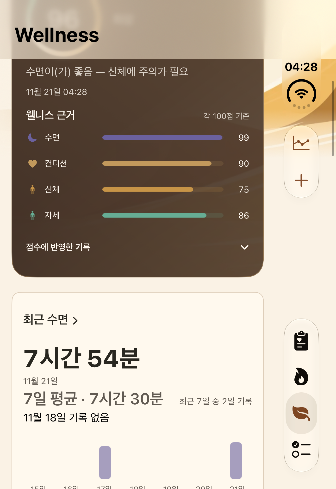
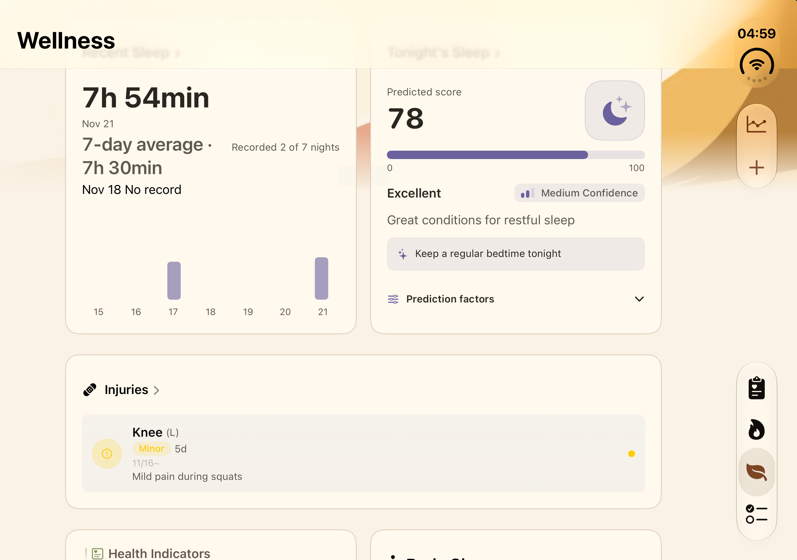
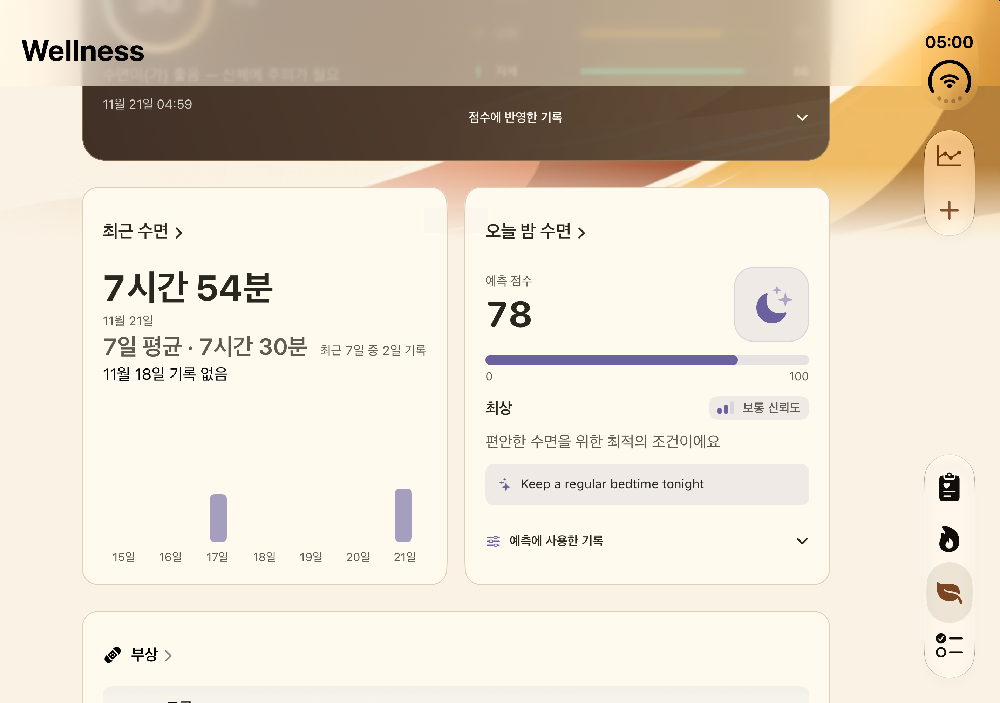
기능별 원격 소스와 최종 통합본을 파일 단위로 대조했다. Source 772b22affeb78f970d3b31b388e2db6bb31e73f4; build 9d56a10d504b9970029186331187604a962cf472,1df57fcfd77f4a6a385fb80f626a872956185f3c,676e10da12b4cc957e8cb6eb516fbee14af5035f,dfea466897aefd82e290e29b81531b027a2b2258,0a266b6ad3dedb4b8cb2e990f9e27cb77a54a871. Passed selectors and original hashes: evidence.json.














